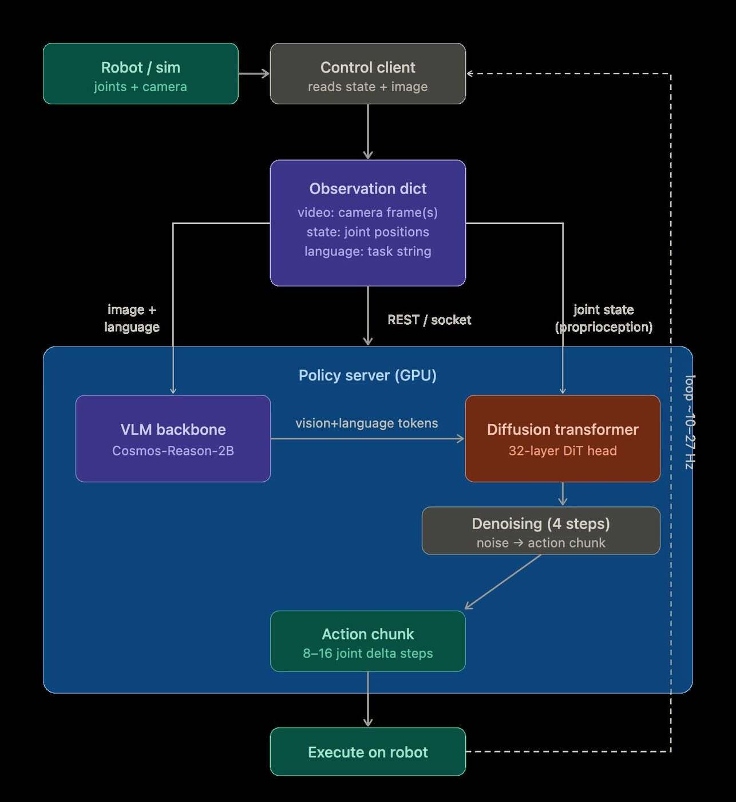

GR00T N1.6 VLA in Newton

Overview
Vision-language-action (VLA) models take a camera image and a language instruction and output robot actions. I integrated NVIDIA's Isaac GR00T N1.6 into the Newton physics simulator so a simulated Franka arm can be controlled by language prompts, as a testbed for VLA-driven manipulation of articulated objects.
How it works
- Policy server: GR00T runs as a server on the GPU (in a tmux session). I started with the ROBOCASA_PANDA_OMRON embodiment, realized it targets a mobile robot, and switched to DROID, which is tabletop manipulation.
- Simulation client: built from Newton's Franka example. It connects a GR00T PolicyClient at startup and
replaces the IK-driven
set_joint_targets()with a newset_joint_targets_groot()that applies the model's actions each step. - Vision: added a tiled camera sensor to feed rendered images back into the VLA, and experimented with camera placements to match what the policy expects.

Debugging
- The VLA outputs end-effector positions, not joint angles as I first assumed, so the action mapping had to change.
- The robot folded in on itself because joint values were being written to the wrong joints; fixed by checking joint labels.
- Got observations into the right format by printing raw data and reading how GR00T's own code processes it.
- Moved visualization from Viser to Newton's viewer, fixed a camera alignment problem (one image needed flipping), and fixed a loop that only called GR00T once.
Current status
The full loop runs end to end. The current issue is that the arm drifts consistently to the right regardless of which axis is tested, which I'm tracking down next.